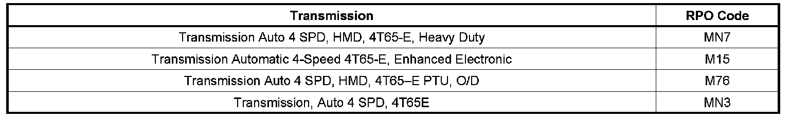
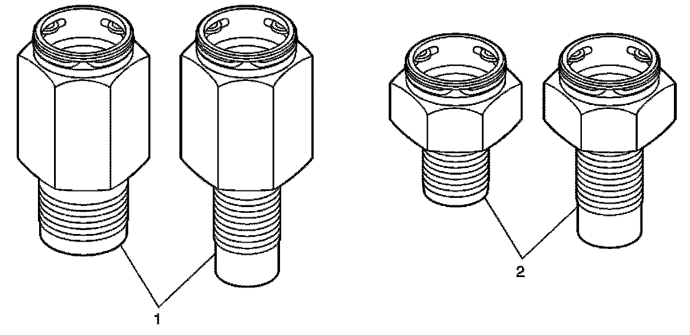
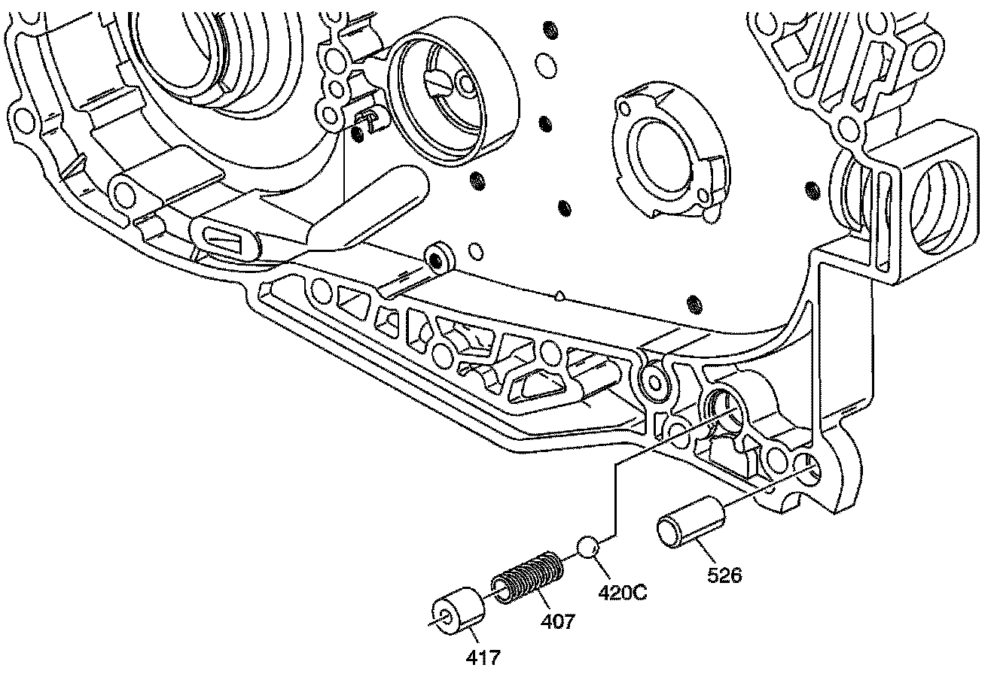
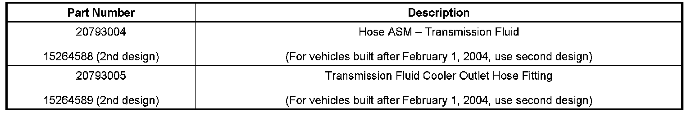

A/T - Revised Converter Check Valve/Cooler Line Fitting
INFORMATIONBulletin No.: 04-07-30-017B
Date: November 25, 2008
Subject:
Information on 4T65-E MN7, M15, M76, MN3 Automatic Transmission Case, Cooler Fitting and Torque Converter Drain Back Check Ball Change
Models:
2008 and Prior GM Passenger Cars and Light Duty Trucks

with one of the HYDRA-MATIC(R) Automatic Transmissions shown above.
Supercede:
This bulletin is being revised to update the Parts Information. Please discard Corporate Bulletin Number 04-07-30-017A (Section 07 - Transmission/Transaxle).

Effective with Julian date 4019 (January 19, 2004), the 4T65E transaxle cases and cooler fittings have changed and are not interchangeable with past models. The technician may find that when replacing the inlet or outlet transmission cooler lines, the new lines cannot be connected to the transmission.
A change to the transmission cooler line fittings was implemented in production on February 1, 2004. The cooler line fittings were changed to a design with a longer lead in pilot (1). The cooler line fittings with the longer lead in pilot will not fit on models built before February 1, 2004.
The longer lead in pilot fittings (1) (9/16-18 UNF) have replaced the shorter lead in pilot fittings (2) (3/8-18 NPSF w/check ball & 1/4-18 NPSF).
If the transmission cooler lines will not connect, then replace them with the following cooler line fittings as appropriate with the older, shorter lead in pilot design:
^ For vehicles built prior to February 1, 2004, use Transmission Fluid Cooler Inlet Hose, P/N 20793004.
^ For vehicles built after February 1, 2004, use Transmission Fluid Cooler Inlet Hose, second design P/N 15264588.
^ For vehicles built prior to February 1, 2004, use Transmission Fluid Cooler Outlet Hose, P/N 20793005.
^ For vehicles built after February 1, 2004, use Transmission Fluid Cooler Outlet Hose, second design P/N 15264589.
The torque specification has changed for the fittings to case. The torque has changed from 38 Nm (28 lb ft) to 32 Nm (23 lb ft).
Tighten
Tighten the new cooler fittings to 32 Nm (23 lb ft).

The converter drain back check ball (420C) has been removed from the cooler line fitting and is now located in the channel plate.
If you get a concern of no movement in the morning or after sitting for several hours, the cooler check ball should be inspected.
The best way to determine where the check ball is located is to look at the cooler line fittings. The old fittings are different sizes (3/8-18 NPSF & 1/4-18 NPSF) and would contain the cooler check ball. The new fittings are the same size as each other (9/16-18 UNF) and do not have a cooler check ball.

Parts Information

Disclaimer